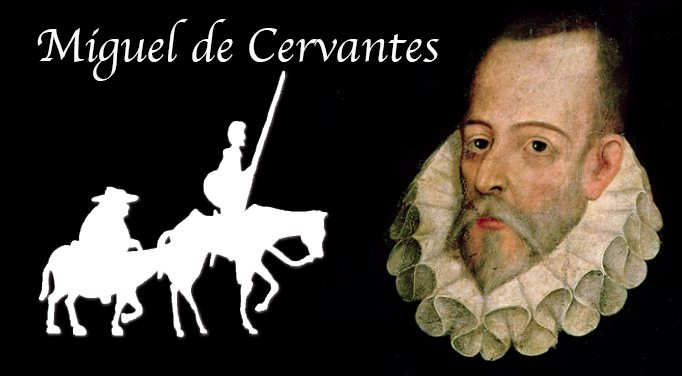

Mighel đê Xervantêx Xaavêđra (Miguel de Cervantes Saavedra), nhà đại văn hào Tây Ban Nha, sinh tháng 10 năm 1547 tại thị trấn Alcala đê Enarêx, gần thủ đô Mađrít, trong một gia đình quý tộc nhỏ, đã sa sút. Ông thân sinh ra Xervan-têx làm nghề thầy thuốc, phải lang thang từ tỉnh này sang tỉnh khác để kiếm tiền nuôi sống bảy đứa con. Về thời niên thiếu của Xervantêx, người ta biết rất ít. Sách chỉ ghi rằng cậu bé Xervantêx đi theo bố mẹ và đã sống ở Vaiađôlít, Xalamanca, Mađrít, Xêviia...

.Trình độ học vấn của Xêvantêx chỉ ở mức trung bình. Trong hoàn cảnh gia đình sống nay đây mai đó, Xervantêx không thể theo học một trường nào đến đầu đến đũa. Có thời kỳ ông học tại một viện của thầy dòng Giêduýt, thời kỳ sau ông lại theo học một học giả nổi tiếng ở Mađrít là Huan Lôpêx đê Ôiô. Tuy nhiên, bù đắp vào sự thiếu sót đó, Xervan-têx có trí thông minh, óc nhận xét và tính ham đọc sách. Sự nghiệp văn chương của ông mở đầu bằng một bài thơ làm vào dịp hoàng hậu Tây Ban Nha Idabel đê Valôix tạ thế. Năm đó, ông 21 tuổi (1568).
Vào thời kỳ này, Ý-đại-lợi là một nơi tụ tập những kẻ đi tìm công danh trong binh nghiệp hoặc văn chương. Năm 1569, người ta thấy Xervantêx tại Rôma, phục vụ giáo chủ Huliô Aquaviva. Năm sau, Xervantêx gia nhập quân đội Tây Ban Nha đồn trú trên đất Ý. Năm 1571, trong trận thủy chiến Lêpantô giữa một bên là đế quốc Thổ Nhĩ Kỳ, một bên là mấy thành thị Ý liên minh với Tây Ban Nha do đôn Huan đê Aoxtria chỉ huy, Xervantêx bị trọng thương, bàn tay trái bị nghiền nát, do đó người ta đặt biệt hiệu cho ông là "Người cụt tay trong trận Lêpantô". Năm 1572, ở bệnh viện ra, Xervantêx lại gia nhập quân đội. Trong ba năm tại ngũ, ông đã qua các nơi như đảo Xixilia, Xerđênha, hoặc các thành phố như Phlôrenxia, Hênôva, Napôlêx, Milan, Rôma là những kho tàng di tích của nền văn học nghệ thuật cổ điển Hy-La. Năm 1575, ông về nước với một bức thư giới thiệu của chủ tướng là đôn Huan đê Aoxtria, hy vọng sẽ được nhà vua trọng dụng. Rủi thay, ngày 26 tháng 9, trên đường về Tây Ban Nha, tàu của ông bị bọn cướp biển tấn công và ông bị bắt giải về Arhêl (Alger).
Trong thời gian bị cầm tù Arhêl (1575 - 1580), ông luôn luôn có ý chí đấu tranh, khuyến khích bạn bè giữ vững tinh thần tìm cơ hội thoát thân. Ông tổ chức bốn, năm lần vượt ngục nhưng đều thất bại, và mỗi lần, ông đã can đảm nhận phần trách nhiệm của người chủ mưu. Tinh thần dũng cảm và lòng vị tha của Xervantêx không những gây tín nhiệm trong anh em cùng chung số phận mà còn làm cho chính vua Arhêl phải kính nể, không giết. Quãng đời này của Xervan-têx đã được nhắc lại trong câu chuyện Người tù, trong cuốn tiểu thuyết Đôn Kihôtê - Nhà quý tộc tài ba xứ Mantra. Cũng trong thời gian này, ông đã nhiều lần cầu cứu những nhân viên cao cấp Tây Ban Nha giải thoát cho ông, song đều vô hiệu. Cuối cùng, chính gia đình ông phải lo liệu tiền nong và, với sự giúp đỡ của Nhà dòng, chuộc được ông về nước.
Lúc này, Xervantêx 33 tuổi. Ông trở về Tây Ban Nha, những tưởng với công trạng xưa của mình, sẽ được triều đình cất nhắc. Nhưng, thất vọng. Năm 1585, ông lập gia đình với Catalina đê Palaxiô Xaladar. Ngán ngẩm bước đường công danh lận đận, lại gặp những khó khăn kinh tế, ông bắt đầu viết sách để kiếm thêm tiền nuôi sống gia đình.
Tập La Galatêa là tác phẩm đầu tay của Xervantêx (1585). Cũng trong thời gian này, ông sáng tác trên hại chục vở kịch được đưa lên sân khấu. Nhưng nhà viết kịch thiên tài Lôpê đê Vêga (Lope de Vega), "Lôpêt vĩ đại" như chính Xer-vantêx gọi, đã xuất hiện, và Xervantêx bỏ nghề viết kịch.
Cuốn tiểu thuyết Đôn Kihôtê - Nhà quý tộc tài ba xứ Mantra, tác phẩm xuất sắc nhất của Mighel đê Xervantex Xaavêđra, ra đời năm 1605 (phần thứ nhất - 52 chương). Người ta cho rằng ông bắt đầu sáng tác vào năm 1602, lúc đang ở trong nhà tù Xêviia, vì như ông đã viết trong lời nói đầu, "tôi thai nghén nó (cuốn tiểu thuyết Đôn Kihôtê - Nhà quý tộc tài ba xứ Mantra - ND) trong một nhà tù, nơi trú ngụ của mọi bất tiện và mọi âm thanh buồn thảm".
Năm 1614, ở Taragôna bỗng dưng xuất hiện Tập hai cuốn Đôn Kihôtê - Nhà quý tộc tài ba xứ Mantra. Tác giả đã không giám ký tên thật của mình mà núp dưới cái tên giả là Alphônxô Phernanđêx đê Avêianêđa. Năm sau, 1615, Xervantêx xuất bản lần thứ hai cuốn tiểu thuyết Đôn Kihôtê - Nhà quý tộc tài ba xứ Mantra (gồm 74 chương). Qua lời mở đầu phần này, ông vạch mặt kẻ cướp đoạt văn chương. Trong phần thứ hai cuốn tiểu thuyết Đôn Kihôtê - Nhà quý tộc tài ba xứ Mantra, nghệ thuật của Xervantêx càng tỏ ra điêu luyện, già dặn. Tác phẩm cuối cùng của ông là cuốn Perxilêx và Xihixmunđa.
Từ ngày ở Arhêl về nước cho tới cuối đời, Xervantêx vừa viết văn, vừa phải nhận của triều đình một số việc linh tinh để bảo đảm sinh kế, khi làm nhiệm vụ tiếp lương cho hạm đội Armađa bách chiến bách thắng, lúc đi thu thuế, v.v... đôi ba lần phải ra tòa, bị ngồi tù oan ức, mà cuối cùng nghèo túng vẫn hoàn nghèo túng. Sách có ghi lại một câu chuyện như sau:
Vào tháng 2 năm 1615, có một đoàn sử giả Pháp sang Tây Ban Nha để đón công chúa Ana đê Aoxtria. Lâu nay hâm mộ tài năng của Xervantêx, họ xin được tới thăm ông. Tới nơi, thấy cảnh nhà quá thanh bạch, một người thốt lên: "Sao! Một con người như vậy mà nước Tây Ban Nha không lấy công quỹ cung dưỡng và làm cho giàu có ư!". Một người khác nói thêm một cách ý nhị: "Nếu sự nghèo túng buộc ông ta phải viết sách thì cầu Chúa cho ông ta không bao giờ sung túc để những tác phẩm của một người nghèo như ông làm giàu thiên hạ".
Ngày 23 tháng 4 năm 1616, Mighel đê Xervantêx Xaavêđra qua đời tại Mađrít. Khi đó, ông 69 tuổi.
Từ khi ra đời, cuốn tiểu thuyết Đôn Kihôtê - Nhà quý tộc tài ba xứ Mantra đã chinh phục dư luận người đọc trong nước cũng như ngoài nước. Ngay trong năm 1605, tại Tây Ban Nha, tập truyện đã được tái bản 5 lần, và sinh thời, Xervantêx đã nhìn thấy tác phẩm của mình được xuất bản 13 lần (6 lần ở Tây Ban Nha, 3 lần ở Bồ Đào Nha, 3 lần ở Bỉ, 1 lần ở Ý). Trải qua gần 400 năm, vượt ra khỏi sự đào thải của thời gian, Đôn Kyhôtê - Nhà quý tộc tài ba xứ Mantra vẫn giành được sự hâm mộ rộng khắp và được công nhận là một trong những tác phẩm văn học lớn nhất của nhân loại. Năm 1795, nhà đại văn hào Đức, Gớt (Goethe), viết cho nhà thơ lớn Silơ (Schiller): "Tôi đã tìm thấy trong cuốn tiểu thuyết của Xervantêx cả một kho tàng thú vị và bổ ích".
Pho truyện thật sự đã đi sâu vào quần chúng. Trong các ngày hội, những cuộc vui hóa trang ở Tây Ban Nha, Bồ Đào Nha cũng như ở nhiều nước châu Âu khác, người ta thường thấy xuất hiện hiệp sĩ đôn Kihôtê và giám mã Xantrô Panxa "hệt như tả trong truyện", Cuốn sách đã được dịch ra hầu hết các thứ tiếng trên thế giới: Anh, Pháp, Ý, Đức, Thổ, Arập, Êbrơ, Xăngxcri, Trung Hoa, Nhật Bản, Triều Tiên... và cả Thế giới ngữ. Ngót bốn thế kỷ nay, Đôn Kihôtê vẫn là đề tài của sân khấu, âm nhạc, hội họa, điêu khắc, màn ảnh. Từ Đông sang Tây, từ Âu sang Á, các nhà phê bình, triết học, cácnhà văn, nhà thơ, những người làm công tác văn nghệ, không ai không xác nhận giá trị tư tưởng và nghệ thuật của cuốn truyện này.
Đôn Kihôtê - Nhà quý tộc tài ba xứ Mantra là cuốn tiểu thuyết cận đại đầu tiên của Tây Ban Nha, viết theo hướng hiện thực phê phán. Trước đó, độc giả các nước phương Tây rất ham thích loại tiểu thuyết kiếm hiệp kể "những truyện hoang đường không lệ thuộc vào những yêu cầu chính xác của sự thật, những nhận xét của ngành thiên văn học, những luật lệ về hình học hay tu từ học" (Lời mở đầu phần thứ nhất, cuốn tiểu thuyết Đôn Kihôtê - Nhà quý tộc tài ba xứ Mantra. Loại tiểu thuyết hoang đường đó có tác dụng rất tai hại vì nó tạo cho người đọc một quan niệm hoàn toàn sai lầm về vũ trụ, về nhân sinh, về tư tưởng, về xã hội. Sách kể lại rằng có cả một gia đình đã khóc lóc thảm thiết khi đọc tới đoạn nói về cái chết của hiệp sĩ Amađix! Với cuốn tiểu thuyết Đôn Kihôtê - Nhà quý tộc tài ba xứ Mantra, Xervantêx đã chôn vùi văn chương kiếm hiệp và khai sinh cho tiểu thuyết cận đại. Selinh (Schelling), triết gia Đức, đã phát biểu: "Chúng ta sẽ không quá lời khi khẳng định rằng cho tới nay chỉ có hai cuốn tiểu thuyết, đó là cuốn Đôn Kihôtê của Xervantêx và cuốn Vinhem Maixtơ của Gớt". Sơlêgơn (Schlegel), nhà phê bình văn học người Đức, cũng đã đánh giá Đôn Kihôtê - Nhà quý tộc tài ba xứ Mantra là "tác phẩm có một không hai trong loại của nó, mở đầu cho tiểu thuyết cận đại..."
Toàn bộ cuốn tiểu thuyết Đôn Kihôtê - Nhà quý tộc tài ba xứ Mantra gồm 126 chương, là một bức tranh sinh động về xã hội Tây Ban Nha với những màu sắc thật của địa phương, của thời đại. Tác giả đã đưa vào truyện trên hai trăm con người thuộc đủ lứa tuổi và tầng lớp, từ lão chủ quán "giảo quyệt" đến những cô gái quán trọ "nom cũng chẳng phải thiện nhân", từ chàng sinh viên Grixôxtômô si tình đến cô Marxêla xinh đẹp và yêu tự do, từ gã lái la độc ác đến tên chủ trại tham lam, cha xứ, bác phó cạo, bà quản gia, ông thầy tu, lão chăn dê, viên cảnh sát, đám phạm nhân cùng một loạt vương tôn công tử, quan lại, nhà giàu... Và ngần ấy con người xoay quanh hai nhân vật chính là anh chàng quý tộc nhưng nghèo đôn Kihôtê và bác giám mã Xantrô Panxa, một thợ cày chính cống. Tác giả đã đưa hiệp sĩ và giám mã của chàng đi khắp đó đây trên đất nước Tây Ban Nha, từ thành thị đến thôn quê, từ những cánh đồng bao la tới những miền núi sâu vực thẳm, từ những quán trọ bình dân tới chốn thâm nghiêm quyền quý. Cảnh vật, con người đều có thật. Và nếu như trí tưởng tượng phong phú của Đôn Kihôtê đã biến quán trọ thành lâu đài, chậu thau thành mũ sắt, đàn cừu thành đạo quân thì, trái lại, những lời nói giản dị mà chí lý của bác giám mã gốc nông dân luôn luôn lôi kéo ta về với hiện thực. Tóm lại, Xervantêx phản ánh khá toàn diện cuộc sống thật của xã hội đương thời. Và ông đã thành công.
Một hôm, vua Tây Ban Nha Phêlipê III đứng trên lâu đài nhìn xuống đường, thấy một anh học trò đang đọc một cuốn sách, thỉnh thoảng lại ngừng đọc cười vang. Nhà vua thầm nghĩ: "Hoặc tên học trò kia điên, hoặc là hắn đang đọc cuốn tiểu thuyết Đôn Kihôtê - Nhà quý tộc tài ba xứ Mantra". Quả nhiên anh học trò đang đọc cuốn tiểu thuyết đó thật.
Đôn Kihôtê - Nhà quý tộc tài ba xứ Mantra đúng là một cuốn tiểu thuyết giàu tính trào lộng. Làm sao người đọc không cười được khi thấy Đôn Kihôtê một thương một mã lăn xả vào tấn công những chiếc cối xay gió vô tội trên cánh đồng Môntiel mà chàng tưởng là "những tên khổng lồ hung tợn có cánh tay dài tới gần hai dặm", hoặc khi chàng cứ nhè những bao rượu trong quán trọ mà đâm, mà chém, ngỡ mình đang đọ sức với tên khổng lồ ở vương quốc Mi-cômicôn!
Thế nhưng Đôn Kihôtê có phải là một kẻ viển vông, điên rồ không? Và Đôn Kihôtê - Nhà quý tộc tài ba xứ Mantra phải chăng chỉ là pho sách kể về những hành động nực cười của chàng hiệp sĩ xứ Mantra? Bàn về tác phẩm số một của Xervantêx, năm 1821 Bairơn (Byron), nhà đại thi hào Anh, viết: "Đó là cuốn truyện buồn nhất, và nó càng buồn vì làm chúng ta cười". Prôxper Mêrimê (Prosper Mérimée), nhà văn thế kỷ XIX của Pháp, cũng đã nói: "Bất hạnh thay kẻ nào không có được một vài ý nghĩ của Đôn Kihôtê và không dám cả gan nhận roi đòn cùng sự chế giễu để bênh vực kẻ yếu hèn!".
Có hai cách đọc tiểu thuyết Đôn Kihôtê - Nhà quý tộc tài ba xứ Mantra: một là trên những dòng chữ, và ta sẽ thấy toàn bộ pho sách là mũi nhọn tấn công vòa tiểu thuyết kiếm hiệp; hai là đọc giữa những dòng chữ để tìm hiểu ý tứ sâu xa của tác giả và tác phẩm. Đọc theo cách thứ hai ta sẽ thấy toát ra từ toàn bộ tác pho truyện một bài học nhẹ nhàng, ý nhị về chính nghĩa, công lý, tự do. Đôn Kihôtê là một người chân chính. Mục đích cuộc đời chàng là "trả thù cho những người bị xúc phạm, bênh vực kẻ hèn yếu, uốn nắn những điều sai trái, phi lý, đả phá mọi lạm dụng, bất công". Ta hãy xem chàng lý luận với tên chủ trại và giải thoát cho chú bé chăn cừu Anđrê bị tên này hành hạ và quịt tiền công:
"- Tên đê tiện này dám nói dối cả ta ư? Đôn Kihôtê thét lên... Cởi trói cho nó ngay.
Tên chủ trại cúi đầu, không dám hé răng, vội vàng cởi trói cho chú bé. Đôn Kihôtê hỏi số tiền công chủ còn thiếu là bao nhiêu. Chú bé thưa rằng chủ còn nợ chín tháng công, mỗi tháng bảy đồng. Đôn Kihôtê nhân lên thành sáu mươi ba đồng, chàng bảo tên chủ trại muốn sống phải trả ngay. Tên này sợ hãi đáp rằng đúng như lời y đã thề (thực ra y đã thề câu nào đâu), số tiền không nhiều đến thế vì y đã chi cho chú bé ba đôi giày và một đồng để chích máu hai lần khi chú ốm.
- Được rồi, Đôn Kihôtê vặn lại; nhưng việc thằng bé phải chịu roi vọt, mặc dù nó không có tội tình gì, cũng đủ bù vào số tiền giày và tiền chích máu. Nó làm rách da giày của ngươi thì ngươi làm rách da thịt của nó. Người ta chích máu khi nó đau ốm thì ngươi chích máu khi nó mạnh khỏe. Như vậy là hòa..."
Đôn Kihôtê - hay nói đúng hơn là Xervantêx - đã vạch trần tính tham lam độc ác của bọn nhà giàu thôn quê.
Đây, một đoạn khác về tính chất hà khắc và thối nát của pháp luật phong kiến. Một hôm, trên đờng phiêu lưu, Đôn Kihôtê gặp một toán người "cổ đeo chung một dây xiềng to bằng sắt, tay đeo xích; đi theo họ có hai người cưỡi ngựa và hai người đi bộ; hai người cưỡi ngựa có súng còn hai người đi bộ cầm gươm mác". Chàng hiệp sĩ bèn dừng ngựa hỏi duyên cớ vì đâu mà họ khốn khổ như vậy. Đám tù nhân đã kể tội trạng của họ: một anh chỉ vì quá "yêu" một cái giành quần áo mà phải chịu một trăm roi và ba năm khổ sai; một anh ăn trộm gia súc mà bị hai trăm roi và sáu năm khổ sai; một anh bị năm năm khổ sai chỉ vì không có mười đồng tiền vàng đút lót cho bọn lục sự, biện lý; một ông già "đạo mạo" cũng bị đưa đi đày chỉ vì ômuốn cho mọi người sung sướng sống yên lành, vui vẻ với nhau, không cãi cọ, không ưu phiền..."
Trong những hành động có vẻ điên rồ của Đôn Kihôtê, vẫn thấy toát lên tình thương yêu nhân loại. Nếu đối với Xantrô Panxa, những cối xay gió là... những cối xay gió, thì trái lại, dưới con mắt của Đôn Kihôtê, chúng là những tên khổng lồ hung ác, ômột giống xấu xa cần phải quét sạch khỏi trái đất".
Đôn Kihôtê yêu tự do, công lý, chính nghĩa. Chàng mong muốn với "cánh tay dũng mãnh" của mình mang lại hạnh phúc, cuộc sống yên vui cho mọi người. Với một tinh thần dũng cảm, không biết sợ, không ngại gian nguy, đơn thương độc mã, chàng lao vào "cuộc chiến đấu không cân xứng", luôn luôn tin tưởng và lạc quan, mặc dù mỗi lần lại bị biêu đầu sứt trán trước những thực tế đáng buồn của thời đại.
Đôn Kihôtê là biểu hiện của sự tương phản giữa thực tế phũ phàng với lý tưởng cao đẹp mà chàng mơ ước và chiến đấu cho nó, là hình ảnh tượng trưng cho cuộc đấu tranh giữa thế giới thực tại và thế giới tương lai mà chúng ta vươn tới. Cuộc sống phải trút bỏ cái vỏ bề ngoài của nó, trút bỏ sự giả dối, ích kỷ, bất công, và phải mang trong nó những ước mơ và làm cho những ước mơ đó trở thành hiện thực.
Đó là nội dung tư tưởng sâu xa của tác phẩm.
Đôn Kihôtê - Nhà quý tộc tài ba xứ Mantra là một kho tiểu thuyết trường thiên bằng tiếng Tây Ban Nha. Khung cảnh hoạt động của các nhân vật là một địa bàn bao la, với nhiều màu sắc dân tộc, với những đặc điểm của từng địa phương và những tính cách riêng biệt của từng nhân vật. Tác giả cũng đã sử dụng một ngôn ngữ phong phú, đa dạng, đặc biệt là ông dùng nhiều ca dao, tục ngữ, từ ngữ dân gian của từng vùng đất nước Tây Ban Nha. Văn chương trong Đôn Kihôtê - Nhà quý tộc tài ba xứ Mantra lại là văn chương của thế kỷ XVI - XVII. Dịch nó quả là khó. Bản dịch này chắc không khỏi còn những sai sót, những "hạt sạn" mà trình độ có hạn của tôi đã không cho phép tôi tránh được. Tôi thành thật mong độc giả lượng thứ cho. Tôi cũng trông chờ những nhận xét, phê bình của các bạn để rút kinh nghiệm cho bản dịch phần thứ hai cuốn truyện được tốt hơn.
Người dịch